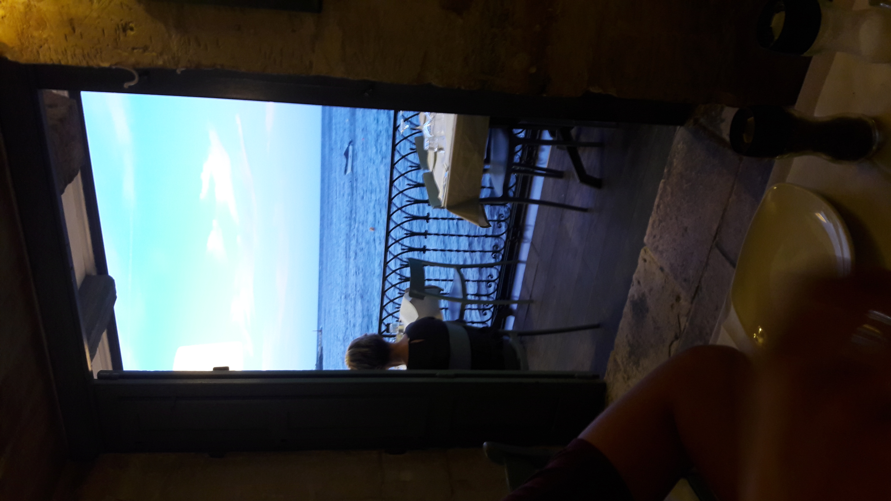
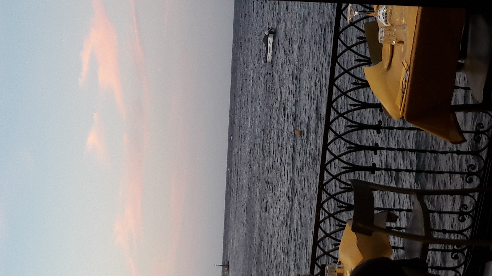
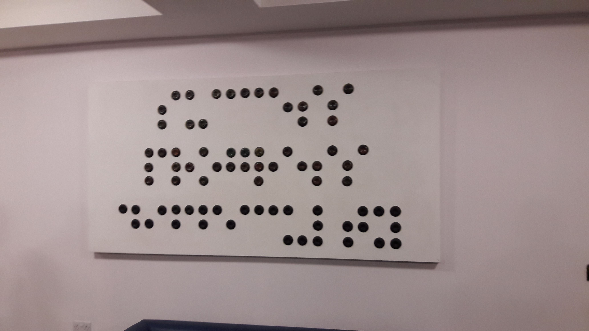
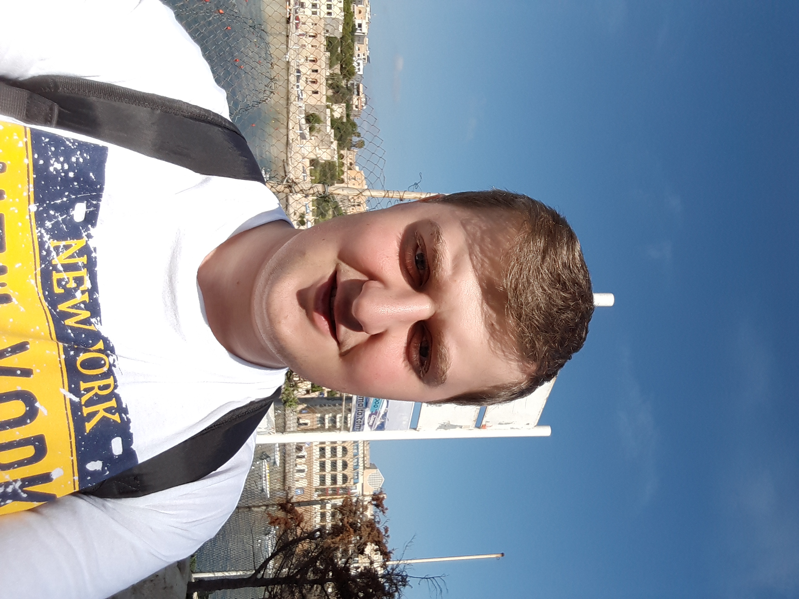
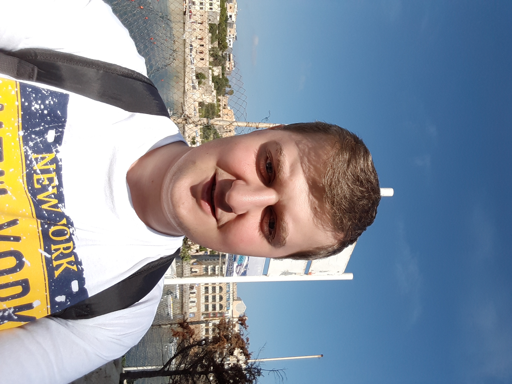

Nous sommes partis à Malte dans la région de la Valette pendant 3
jours.
Le départ était le lundi soir du 23 septembre 2019 à l'aéroport de
Bruxelles-Sud/Charleroi.
Le mardi soir, nous sommes allés au restaurant Piccolo Padre Trattoria
à Sliema longeant la mer.


Le mercredi matin, nous avons visité la MCAST (Malta College of Arts,
Sciences and Technoly) et son campus. Là-bas, nous avons suivi une
présentation de Malte et son économie.

L'après-midi, l'entreprise PwC nous a reçu pour nous parlé de sécurité
informatique dans les entreprises.
Pour le dernier jour, nous sommes allés au International Language
Centres de EF à St Julians, ils nous ont expliqué l'importance de
l'anglais à Malte et le monde du travail à Malte.
 

Je suis content d'avoir pu découvrir Malte, bien que ce voyage fut
plutôt court.
J'avais notamment écrit un rapport sur cette visite pour le cours de
communication.
Le rapport